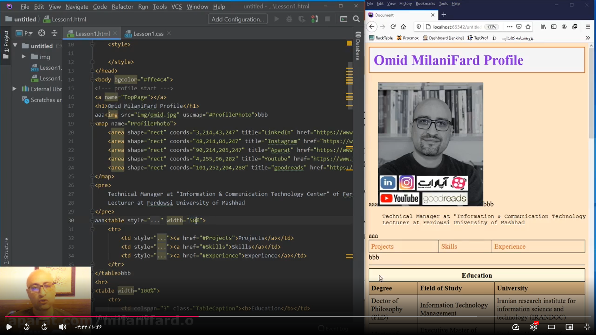

در این قسمت از آموزش در مورد دو مفهوم مهم در html صحبت می شود. المنتهای بلاک و این لاین. به عبارتی دو نوع نمایشی مختلف متن ها در html که بلاک و اینلاین هستند و بر همین اساس المنتها براساس اینکه پیش فرض آن ها بلاک هست یا این لاین ، به دو دسته بلاک لول و این لاین تقسیم می شوند
تفاوت های المنت های بلاک و این لاینزمانی که المنتی نوع نمایش آن پلاک هست یا اصطلاحا بلاک لول هست،همیشه شروعش از یک خط جدید هست یعنی زمانی که بروزر به اون تگ می رسد برای اجرا یک خط جدید ایجاد می کند و از سر خط جدید المنت رو شروع به نمایش دادن می کند. و زمانی که نمایش داده می شود تمام عرض قابل گرفته شدن در صفحه را برای آن المنت استفاده می کتد. به عبارت دیگه اجازه نمی دهد که هیچ المنت دیگری در کنار آن قرار بگیرد اما این لاینها به این شکل نیستند. دقیقا همان فضایی را که نیاز دارند اشغال می کنند و در کنار عناصر قبلی و بعدی خود قرار میگیرند.
:برخی المنت بلاک لول: table, div, dl, form, h1-h6, ol, p, pre, ul
برخی المنت این لاین: a, b, i, img, span
مثال 1:در مثال بالا در المنت ایمیج که به صوزت این لاین هست،اگر قبل و بعد از آن المنت های دیگری قرار گیرند، می بینیم به تگ ایمیح همان اندازهای که نیاز بوده فضا اختصاص داده شده و وقتی هم به محتوای بعدی رسیده دقیقا به آن چسبانده شده نمایش داده شده است
مثال 2: 
بریم سراغ بلاک لول بعدی که در عکس بالا داریم و اگر مانند مثال 1 عمل کنیم می بینیم که به چه شکل قرار میگیرد و با اینکه محتوا به آن چسبیده است، به خط بعد رفته است.و از خط بعد شروع کرده است به نمایش المنت ما و تا جایی که توانسته این فصای خط را به آآ« تخصیص داده یعنی اینکه اینکه محتوا ها را دقیقا قبل و بعد ازآن قرارا دادیم این حالت به وجود آمده است
با این حال ما سر خط بعد ممکنه اینجا فکر کنیم چون اینجاد من گذاشتم هست من میگم مثلا این و بکنن پنجاه درصد خب ببینید با اینکه این پنجاه درصد فضا ر گفتید اینقدر کلا اندازه ردرانر بگیر بقیه ر دیگهع بعدی ر اجازه نمیده که بهش بچسبه بلکه ببره به خط بین ر به عنوان اختصاصی این المنت بلاک در نظر میگیره این ر بردارم برامبرگر صد درصد خب بریم سراغ این ببینید یه کاری ر بخوایم انجام بدیم این ایمل با اینکه این لاین هست میخوایم بیایم چیکار کنیم وسط چینش کنیم وسط تصویر به متوسط صفحه به ما نشون بده از اونجایی که این لاین هست به نظر میرسه درحالت عادی ما نتونیم فرض کنید بایک مثل الان مثلا بگیم سنتر و این بیاد وسط صفحه این ر قرار بده به خاطر اینکه به خاطر اینکه هم سمت چپ سمت راستش ممکن انتهایی قرار بگیرن و درواقع این لاین به این شکل میشه براش علامت تعریف کرد ولی میایم چیکار میکنیم برای اینکه مرتبتر بیسیست سالی سایتی براش تعریف میکنیم مثلا سنتر خب اولین کاری که باید انجام بدیم این هست که این ر بیایم به شکل یک المنت باکودر بیاریم یعنی دیشودیشو بگیم این بلاک هست خب میگیم ریلیبنارد این ر هم بیان تخصیص بدم کلاس سنتربا چه اتفاقی میفته من دوباره همون ایداویرو بذارم الان چون بلاک لوشینی اینجا ای دی و بی بی بعد از و قبل از تصویر قرار گرفتن